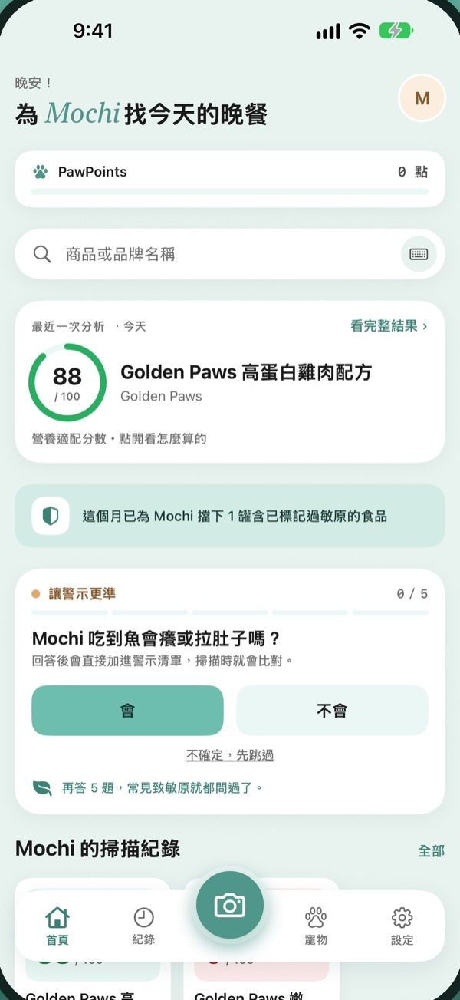
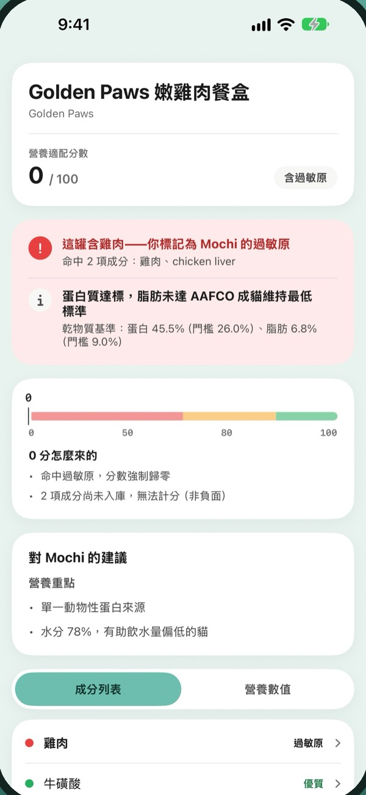
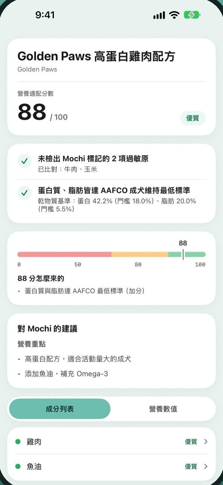
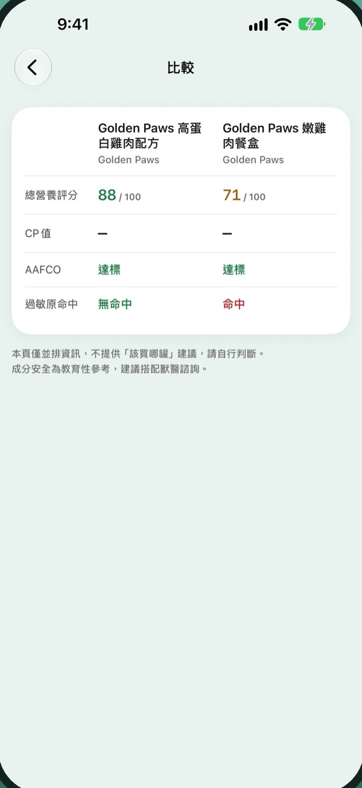

個人化過敏原提醒
比對你為毛孩設定的過敏原，標示食品中可能引發過敏的成分。
每隻毛孩的飲食需求都不同。拍下寵物食品成分表，Pawlaris 幫你檢查過敏原、潛在有害成分與營養資訊，在餵食前多一分了解。
前 5 次完整分析免費・用完後過敏原提醒仍可持續免費使用

看不懂的成分表，交給 Pawlaris 整理成你看得懂的重點。
比對你為毛孩設定的過敏原，標示食品中可能引發過敏的成分。
依據 Pawlaris 整理的成分安全資料，提醒可能有害或需要留意的成分。
參考 AAFCO 公開營養標準，比對蛋白質、脂肪等營養數值，並提供評分原因。
將複雜的成分與營養資訊轉換成容易理解的說明。
根據你填寫的毛孩健康狀況，提示可能有幫助或值得留意的相關成分。
目前支援腎臟、關節、體重管理、皮膚與腸胃等部分狀況，僅供參考，非醫療建議。
從掃描紀錄選擇兩款食品，並排查看分析結果。
選擇狗或貓、年齡與體重，標記需要避開的過敏原。
用 iPhone 拍攝食品成分表，或以品牌與商品名稱搜尋資料庫中已收錄的食品。
過敏原、成分警示與營養評分一次看完，分數旁邊就有原因。



首次使用 Pawlaris，即可免費體驗 5 次完整食品分析。
下載即可使用
月訂閱或年訂閱，價格以 App Store 顯示為準
月訂閱與年訂閱皆提供符合資格的新訂閱者 7 天免費試用。訂閱將自動續訂，可隨時在 Apple 帳號設定中取消。
拍攝成分表並成功完成分析才會計一次；重拍、分析失敗或用品牌與商品名稱搜尋都不計次。
過敏原提醒仍可持續免費使用。其他完整分析功能需要訂閱 Pawlaris Pro。
目前不支援條碼，請直接拍攝成分表，或用品牌與商品名稱搜尋。
不行。Pawlaris 提供教育性質的寵物營養參考資訊，關於毛孩的飲食及健康需求，請諮詢專業獸醫師。